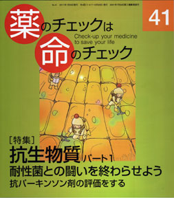

No.41 [特集] 抗生物質パート１ 耐性菌との闘いを終わらせよう 2011年1月 発行
抗生物質は、どの世代の人も「お世話になっている」かもしれない薬の代表でしょう。それでいて、 ほんとのところ、自分の症状や病気に、本当に必要な治療薬剤（必須薬という）なのかどうかを知らない。 抗菌グッズが流行り、生活周辺から「ばい菌」を追放しようと神経質になっている風潮と院内感染の発生と、 根っこは同じかもしれません。
今号と次号との２回に分けて特集しますが、今号では全体を理解していただき、次号で具体的な害作用（副作用）や 患者用薬の説明書、どんなときに必ず使うか、などを特集します。
もくじ
Main Feature 特集 抗生物質パート１
■ いまさらだけど聞きたい知りたい 抗生物質のこと。 編集部
■ 勝ち目のない闘い 抗生物質の歴史 谷田憲俊
■ 院内感染報道の正しい読み方 隈本邦彦
■ 抗生物質使用の原則（訳と補足） 編集部
抗生物質治療ガイドラインの翻訳に際して
Second Feature 第２特集 パーキンソン病の薬
■ 抗パーキンソン剤を評価する （40号の続き） 浜 六郎
■ 抗パーキンソン剤の患者用説明書
■ 薬剤評価リスト
Special
■ NHK「ためしてガッテン」
「600万人を襲う！謎の不元気症候群」を斬る！ 木元康介
Series 連載
■ リレーエッセー 受けますか？ がん検診 春本幸子
■ 新・市民の視点 乳がんの告知を受けました 増山ゆかり
■ みんなのやさしい生命倫理(41) 生老病死(11) 谷田憲俊
Others その他
■ 医師国家試験に挑戦しよう！（８）
■ コーヒー無礼区
■ 海外情報 ドイツでアクトスが保険対象外に
■ 質問箱（１）「がん検診と幸せ」を読んで
（２）「保湿そのものがよくない」について
■ 医師国家試験の解答
■ 読者の声
■ 書評
■ 用語解説（医学、統計学などの用語を解説しています）
■ 次号予告
■ バックナンバー常備店リスト
■ 編集メンバー紹介
■ バックナンバー一覧
■ 書籍申込用紙
■ 編集後記/奥付